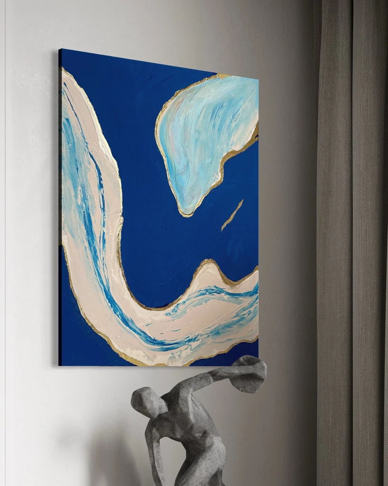
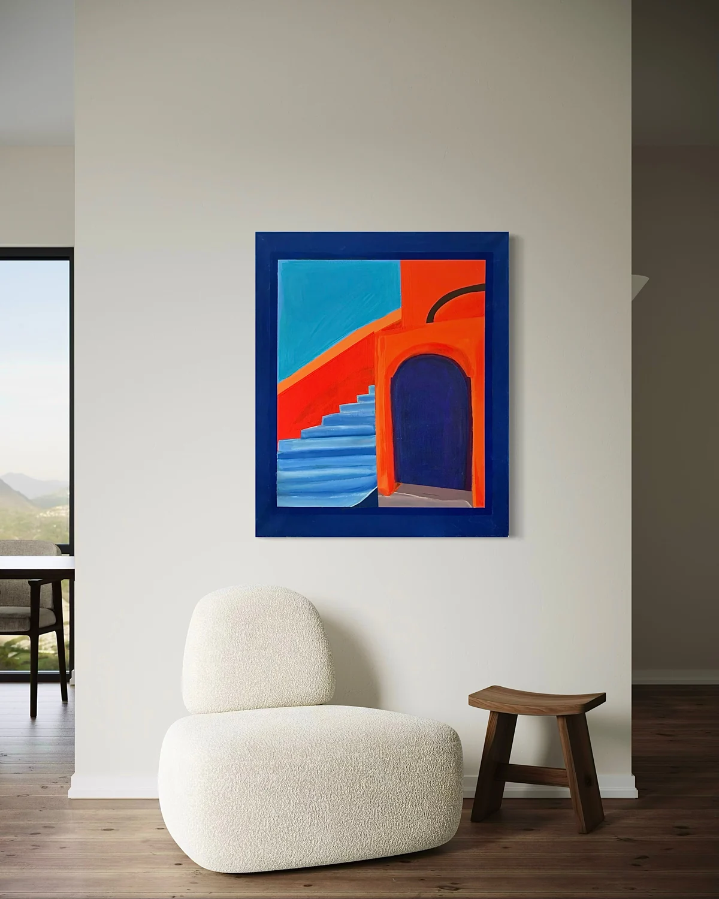
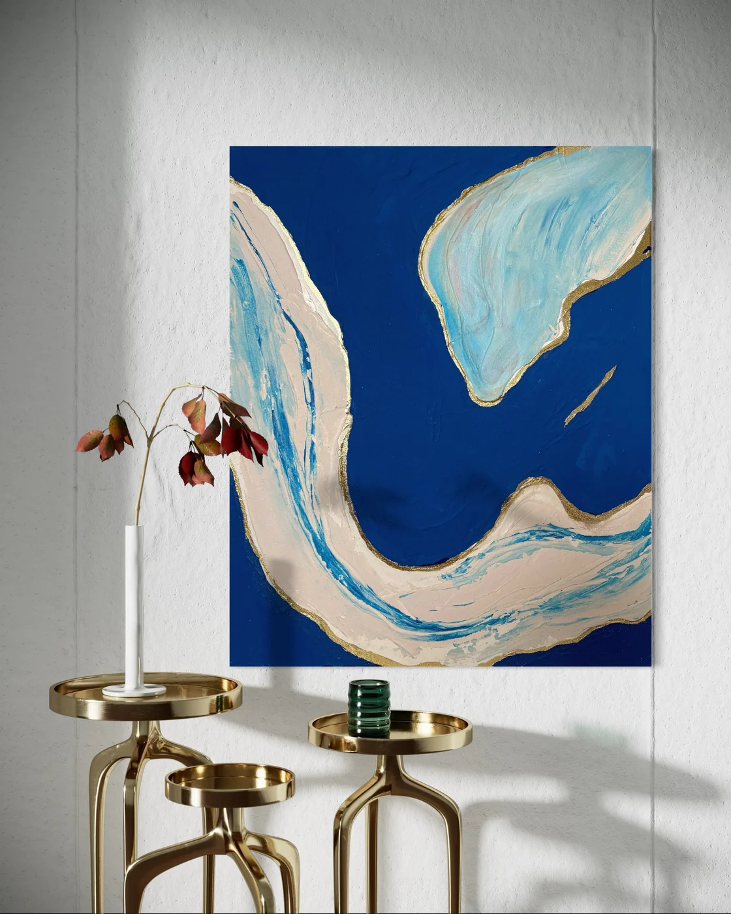

Sirine Siena
Peindre pour apprendre à regarder.
La peinture est mon premier moyen d'expression. Elle nourrit mon approche du branding : composer une image, créer une tension, donner envie de s'approcher. Exposante à la Galerie Image In'Air, Paris — 2023–2024.

The Door
Architecture, couleur franche et seuil imaginaire. Acrylique sur toile
Pink Facade
Façade rose, ciel bleu, minimalisme solaire. Une image qui ressemble à une affiche. Acrylique sur toile
Retro Desert
Une voiture rose, une route, une image comme affiche. Nostalgie et liberté. Acrylique sur toile
L'Enfant
Regard frontal, silence, présence. La première grande toile — exposée à la Galerie Image In'Air. Acrylique sur toile
Paysage rose
Rose, paysage mental et matière lumineuse. L'espace comme état d'âme. Acrylique sur toile
Blue Window
La fenêtre comme cadre dans le cadre. Bleu et lumière naturelle. Acrylique sur toile
The Door II
Variation. La même porte, un autre regard, une lumière différente. Acrylique sur toile
Retro Pink Room
La même voiture, un intérieur rose. Le temps suspendu d'une autre époque. Acrylique sur toile
Blue Orchids
Fleurs, bleu, délicatesse. La nature comme motif décoratif et vivant. Acrylique sur toileArt & communication
Cette sensibilité visuelle devient un outil de marque.
Pour une galerie, une maison de vente ou une maison de luxe, je peux apporter une lecture sensible des images et une capacité à les traduire en récit, contenu et expérience. Exposante à la Galerie Image In'Air (Paris, 2023–2024).
Me contacter